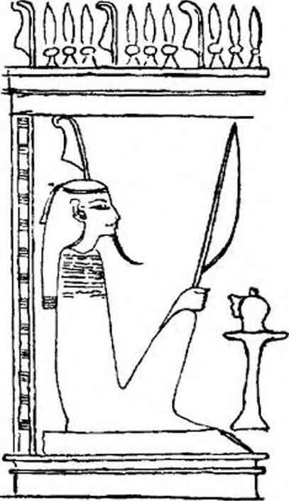

Şekil — 4
>
«ÖLÜLER, RÜZGÂRLA YÜKSELİR.»
(Torino Papirüsü)
özetleyelim. Eski Mısırlılar için ölüm mevcut değildi. Her biri, toprağın öbür yüzünde kendine, dünyadakine oldukça benzer bir yer ve bir mevcudiyet bulacağına güvenebiliyordu. Gezegenler arasında, kendini doğruya çıkardıktan sonra, maddî zenginliklerinin hiçbirini terk etmeksizin vaad edilen ebediyetle mutlu olabilirdi. İşte burada firavunun uyruklarının ölülerine gösterdikleri özenin, sandığımız gibi o kadar menfaatsiz olmadığı ortaya çıkıyor. O kadar çabuk unutan ve etkilenebilen canlıların, ölülerin haklan olan maddî ve mânevî özenle memnun edilmedikleri zaman, onların dönüşlerini ve kızgınlıklarını düşündüklerini söylemek gerekir. Ölünün akraba ve yakın dostlan, onun kendine yapılması gerekeni isteyeceğini, eğer bunlar yapılmamış veya kötü yapılmışsa, yaşayanların evlerine taciz etmek için gelebileceğini bilirler. Buna ne Teb esnafının sattığı muskalar, ne rahiplerin duaları, ne de bu biçim yazılarda uzmanlaşmış kâtiplerin yazıları engel olabilmektedir. Torino Papirüsü «rüzgârla taşınan» bu ölülerin yapabilecekleri kötülüklere değinmektedir. Metin, ölülerle yakınları arasındaki hasis pazarlıklardan bahseder. Dullar ve yetimler ölmüş koca ve babalarına artık kötülük yapmaması ve kendilerini İçinde bıraktığı sefaleti arttırmaması için yalvarırlar. Erman, kendisi görevle evden uzakta iken, ona bakacak bir hekim bulmasına rağmen karısı ölen Memfisli memur vak'asını anlatır. Mâtemini tutarken o kadar büyük bir acı duydu ki «üç yıl boyunca neş’esini kaybetti» ve o kadar uzun zaman kederinin sürmesi onu öyle sıktı kit ölü kadını neş’esini yeniden bulmasına engel olmakla suçladı ve aşağıdaki mektubu yazıp mezarı üstüne bıraktı: «Kusursuz ruhlu Ankh-iri. Sana ne kötülük ettim ki bu kadar zavallı bir hale düştüm? Niçin beni ezmeye çalışıyorsun? Ben senin sadık kocan değil miyim? Gençken seni aldığım zamandan beri ekmeğini, elbiselerini, kokularını sana verdim. Seni hiç hor görmedim; yabancı bir kadının evine hiç girmedim, öldüğün zaman adamlarımla beraber ağladım, sana ince ketenden elbiseler giydirdim. Ve Douat dünyasında olduğun üç yıldır bana eziyet ediyor ve eski neş’emi bulmama engel oluyorsun. Kalbimi sevinmekten alıkoyarsan seni adalet karşısında suçlamak üzere dava mı açmalıyım?» Bütün bu görüşler, inisiyasyondan geçenlerin öğrendiklerine uymamaktadır belki. Ancak sıradan maddî menfaatlerin, huzurun korunması, hiç kimsenin, ruhunun yazgısıyla ilgilenmesine engel olmamıştır.
BEŞ YÜZ KIRK İKİ İLÂH VE III. THOUTMES'ÎN MEZARINDAKİ ÖLÜM MELEKLERİ
Eski Mısırlılar ölüm sırlarından hiç bir endişeye kapılmak- sızın söz ediyorlardı. Bununla beraber Douat’ın kapılarında onla- n bekleyen canavar yüzlü tanrılar, daha ziyade, korkunçtu. III. Thoutmes’in mezarında görülebileceği gibi, beş yüz kırk iki tanrı ve zebâninin egemen olduğu korkunç bîr evrenin derinliklerinde, her hayatın açılıp geliştiğini biliyorlardı. «Mezarında uzanmış olacağın o günü düşün, diye okunabilir dört bin yıllık bir papirüs’ten. / Bir akşam, sedir yağı ve tanrıça tarafından örülmüş bantlarla kutsanacaksın. Gömülme gününde güzel ağlayıcı kadınlar cenaze alayının önünden gidecekler ve başlarına Batı vadisinin ince kumlarını serpecekler. Mumyan altından olacak. Öküzlerin çektiği ölü arabasında giderken, sandukanın tavanı, gökyüzü gibi, üstünde olacak. Mezarının kapısında kutsal danslar yapılacak, ve rahipler kalbini sevindirecek sözler söyleyecekler.» /
TEB NEKROPOLLERİNİN EVRENİ.
Mısırlılar, ayaklarının altında gerçekten acayip bir evren tasavvur ettiler. Bu evren, görünüşleri, mevcudiyet veya güçlerinden daha endişe verici tanrılarla ve kötülüğü ebedi şekilleriyle simgeleyen kötülük yapıcı ruhlarla doluydu. Her mezar kapısının arkasında Douat’ın akla gelmez karanlıklarının eşiğinde Teb nekropollerinin uzun koridorlarını bir defa olsun görmek, gerçek bir tedirginlik duymak için yetenidir, ölü ruhları, bütün vaad- lere, bütün yapay gösterişlere rağmen, acımasız ve sıcaklıktan yok" sun bir alemde ümitsizce yalnız değil midirler? Bu yerlerden böyle bir anı mı saklanacak, orada hiçbir şeyin adlandıramayacağı bir hiçlik içinde kaybolmak duygusu hissedilmezse, gerçekten orada, kendi etrafımızda zaman ve mekânın kaydığını milyonlarca yıl duyacak mıyız? Krallar Vadisinin ölü saraylarının salon ve koridorlarını gezdim. Tanrılar ve işaretlerle dolu gecenin derinliklerinden çıkıp, ayakta duramayacak kadar sarhoş biri gibi. Mısır gök’ünün açıklığına kavuştuğumda, istirahatlerini bozmaya cesaret ettiğim ruhların büyüsünden kendimi kurtaramadım. Eski Mısırlıların bu ölüler dünyasında gördüklerimi unutamam: Suçlayıcı tanrıların garip görüntüleri; tılsımlarla örtülü o firavun mumyaları; tersine bir evrende başıboş dolaşan kafası kesilmiş o Osiris düşmanları; karanlıklarda değişen belirsiz görünüşlü o şekiller. Biban el Molouk nekropollerinde. canlı ışık dünyasını bıraktıktan sonra, binlerce yıllık unutulmuşluk veya ilgisizlikten sonra, Teb nekropollerinin dehşet verici sessizliğinin ne olabileceğini anladım. Piramitlerin yedi yüz metninde açıklanan ölüm cennetine doğru alt dünyanın on iki bölgesinden iniş boyunca süren o ezici dehşeti hissettim. Çünkü ebedi gecelerin hareketsizlik ve doluluğunda, kararsız ve dayanılmaz bir şey var... Hayır, açtığım bir kapının ardında kaynaştıklarını gördüğüm ışık düşmanı canavarları, sonra başka bir kapının ardında, yeni dirilmeler bekleyen kendini temize çıkarmışları hiç unutmayacağım. Kendilerine, atmaca başlı tanrılar tarafından milyonlarca yıllık bir süre tanınmış firavunlar, incecik bacakları arasında koca güneşleri yuvarlayan skarabeler... Yıldızlı tavanı ile, astronomik tabloları ile, bir coğrafya kitabının resimleri gibi, mezar ötesi bölgelerin, ruh ve madde uzayın soğukluğunda kaybolana kadar seçilmişlerce işlenecek İalou tarlalarını tasvir eden büyük freskleri ile «Altın Salonlardı seyrettim. Anlamına akıl erdire- meden Râ’nın yetmiş beş şeklini; ölüler tarafından, uzun bir yılandan başka bir şey olmayan bir halatla çekilen güneşin kayığının üzerinde yüzdüğü Douat’ı, kutsal nehri gördüm. Dirilmiş, sıradan, kazandıkları ebediyeti ne yapacaklarını bilmeyen ölüler; sihir formülleri arayan, öbür dünya rahiplerinin küçük adak ekmekleri ve çok tatlı bira ile besledikleri kuş-ruhlar; mumya biçiminde Osirisler; cehennemin en gizli bölümlerinde resmedilmiş konstellasyonlar; annelerinin karnındayken aldıkları ka’dan mahrum, dublesiz cehennemlikler; lahitlerin dört köşesinde, dipte yatan mumyayı korumak istermiş gibi kanatlarını yaymış tanrıçalar gördüm... Şunu iyi dinleyin: Vadi Engereğinin ağzından giren ve kuyruğundan skarabe olarak çıkan, Ptah gibi pullu ölüler gördüm. «Altın Salonlara* Hetnoub'lara giden aydınlık koridorlar boyunca tanrıçaların acayip yüzlerini şöyle böyle tanıyabiliyordum; aralarından bazılarının timsah gibi kaygan karınları vardı. Ve sonra bu korkunç salonda ruhun tartılma sahnesinde, korkunç terazinin kefelerinin sallandığını görür gibi oldum. Sanki bakışım veya nefesimde bir mekrûhluk varmış gibi, sanki, kraliçe Nefertiti’yi mezarına götüren îsis’inki gibi yeşilimsi olmayan tenim bir şeytan teni imiş gibi... Şanssız ölülerin kalbinin, adalet tanrılarının yargılarını dikkatle izleyen Büyük Yiyici'nin açık ağzına düştüğünü gördüm. Aklım yerinden oynadı. Her yerde etrafımda kokmuş çakal kulaklı Anubis’i boğa başlı Mentou’yu, ucu bir an iğnesi gibi sivrilerek biten iblis başlı Thot’u görüyordum. Bir yuvarlaklı hac (croix ansée) yağmuru altındaydım. Yavaş yavaş kendimi ölüler ve hâkimler kalabalığı ile karıştırı- yordum. Douat’ın bu karabasanlı görüntülerinin her tarafta kaçıştıklarını görüyordum. Ben ki başka bir devirden, çok uzak bir geçmişin sırlarına nüfuz etmek ve Teb nekropollerinin bu esrarlı kalabalığında, gerçek ne olabileceğini araştırmak için gelmiştim. Bütün duvarlara resmedilmiş ruhların tartılıp yargılandığı bir halüsinasyonu andıran sahneden kendimi ayıramıyordum: Çünkü her yerde, hakimlerin ve ölülerin kaynaştığını görüyor, ölülerin son haykırışlarının büyük bir velvele ile yükseldiğini, olumsuz itirafların ümitsiz şarkısını işitiyordum.

Şekil — 5 - A
Bıçaklarla silahlanmış Douat Kapılarının koruyucuları. - British Museum'daki Anhai Papirüsü. CXLVI.
Şekil 5 - B
Bıçaklarla silahlanmış Donat kapılarının koruyucuları. — British Museum’daki Anhai Papirüsü. CXLVI
III. BAB
* BELKİ DE, ÖLÜMLE KARŞILAŞAN İNSAN İLK DEFA DOĞAÜSTÜ FİKRİNE SAHİP OLMUŞ VE ONU GÖRMEKTE OLDUĞUNUN ÖTESİNDE ÜMİT ETMEK İSTEMİŞTİR. ÖLÜM İLK BİLİNMEYEN. OLDU. BU İNSANI DİĞER SIRLARIN YOLU ÜZERİNE ÇEKTİ. DÜŞÜNCESİNİ GÖRÜNÜRDEN GÖRÜNMEYENE, GEÇİCİDEN EBEDİYE. İNSANİDEN İLÂHÎYE YÜKSELTTİ.*
Fustel de Coulanges, LA CİTE ANTİQUE
Ölüler Kitabı tanrıların eseridir. Amélineau: «Belki de bu, İnsan düşüncesinin meydana getirdiği en eski eserdir» demektedir. Sadece bir yüzyıldan biraz fazla bir zaman evvel Nil Vadisinde Memfis, Teb, Heliopolis’ten gelen papirüsler bulunmuştur. En önemlileri XVII., XXI., XXVI., ve XXXI. sülâle dönemlerine ait olanlardır. Bu İnisiyasyon tekstlerini İlk çözen büyük bilginlerin isimlerini zikretmek yerinde olur: W. Pleyte, W. Budge, L. Spe- leers, A. Erman, J. Vandier, A. Moret, Nina G. Davles, Jéxuier, Samuel A. B. Mercer, E. Naville, H, Grapow, P. Le Page Renouf. Eski Mısır mabetlerinde inisiye olan Yunanlılar, en büyük gizlilik içinde öğrendiklerinden bize hiçbir açıklamada bulunmamışlardır. Kısa bir zaman evvel Atina’da yayınlanan mükemmel bir travayda : <Le Livre des Morts de l’Egypte Ancienne est Livre d’initiation : Eski Mısır’ın ölüler Kitabı bir İnisiyasyon kitabıdır» - S. Mayassis, Nil Vadisinin en ünlü mabetlerinde inisiye olmuş Grekleri saymaktadır: Orphée Osiris sırlarını biliyordu. P. Foucart (Tanrısal Memfis’te «ışık mantosunu» aldı ve «Ölüler Kitabının» formülleri, Orphée’nin eğittiklerine en büyük sırların malzemesini hazırladı) diye yazar: (Recherches sur la Nature et l'origine des Mystères d’Eleusis : Eleusis Sırlarının köken ve niteliği hakkında araştırmalar.) Homer hiyeroglifleri okumasını biliyordu. S. Mayassis «Oxyrhynchos Papirüsünde, Ullsse’in Cehennemin eşiğinde Anubis’in, İsis, Osiris, Ptah ve diğer Mısır tanrılarının gölgelerini (ruh veya görüntülerini) çağırmak için okuduğu sahte bir dua muhafaza edilmiştir» diye yazmaktadır, bazı müellifler İlyada şairinin Mısır’da yaşadığını, diğer bazıları da Teb’de, o yüz kapılı şehirde doğduğunu yazmaktadırlar. Piramitlerin gölgesi ile İnsan gölgesi arasındaki oranı hesaplayarak piramitlerin yüksekliğini ölçen Thales’l de sayalım. Solon Sais'- de kaldı; firavun Amasls, Pythagoıe’u Memfis rahiplerine tavsiye etti. Laerce’de okuduğumuza göre «Pythagore, mabetlerin en kutsalına girdi, rahiplerce inisiye edildi, tanrılar ve ruhun ölümsüzlüğüyle İlgili değişmez gerçekleri tanıdı; gizliliğin mührü altında, dünyanın yaratılışının nasıl olduğunu bildi. (S. Mayassis’- ln çevirisi) Jambilique’in yazdığı «Pythagore’un Hayatı»nda şöyle denilmektedir: «Pythagore, Mısır’da, mabetlere büyük bir gayretle devam etti. İlişkisi olan rahiplerin hayranlık ve sevgisini kazandı, hiç bir sözlü öğretiyi ihmal etmeksizin, her şeyi çok çalışarak öğrendi. Bütün rahipleri ziyaret ederek her birinin sahip olduğu bilgeliği öğrenip yararlandı. Cambyse’in ordularınca esir alınıncaya kadar Mısır’ın mabetlerinde (adyton) kalıp yirmi yıl boyunca tanrıların bütün ayinlerine inisiye oldu.» Firavunların çifte krallığında bir süre kalarak yalnız inisiyelerin katılabileceği seremonilere kabul edilenlerden Démocrlte’i, Mısırlılar arasında on üç yıl kalan Platon’u, Cnide’li astronom Eudoxe’u, Mısır’ın hermetlk literatürünü (gizli yazılarını) ana diline çeviren Hermès Trismégiste’i sayabiliriz. Nihayet, E. Guimet’nin yazdığına göre Osiris ve Dionysos sırlarına inisiye olmuş bulunan Apollon’un büyük rahibi Plutarque’i; hiyerogliflerin çevirisini yapabilen ve onların gizli anlamlarını bilen Plotin’i ; E. de Rougé’ nin not ettiğine göre «Mısır rahibi, duasında andığı ulûhiyete bürünüyor, o tanrının karakterini düşlüyor; inisiyasyonla öğrendiği tanrısal vasıfları kapsayan kutsal sözlerden yararlanıyordu. Şu addaki (ölünün ismi) Osiris... hitabı buradan gelir..» diyen Jambilique’i de zikretmemiz gerekiyor (son hitap cenaze ayinleri sırasında kullanılır.)
ÖLÜLER KİTABI BİR DUA KİTABIDIR.
>
>